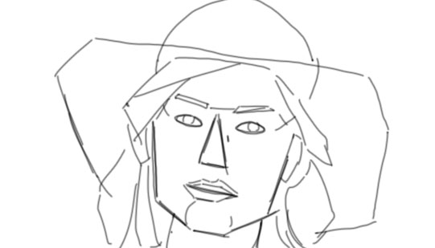

STERGEN
STERGEN
lær og forstå hvad det ville sige at tegne en strege
velkommen her kan du finde aktikeler der kan hjælpe dig med at blive bedre til at tegne. for at kunne være med skal du brug papir, plyant og en vilde til at lære. hvis du har det så kan du bare vælge kan du trykke på det billede du ville lære fra.
TONEN
lær og forstå hvorfor det at bruge tone på sine tegner kan gi et andet indtryk
 FORMEN
lær og forstå former hvordan de kan hjælpe dig når du laver din tegning og hvorfor de er gode at bruge